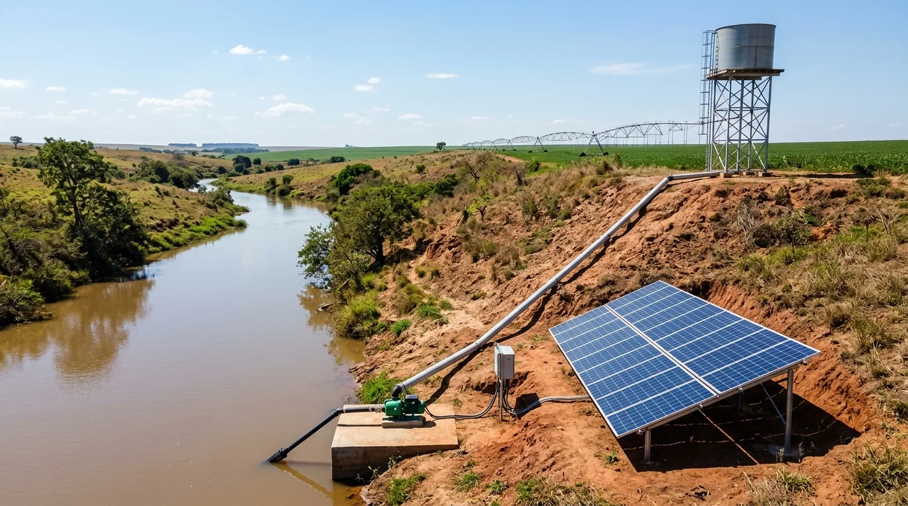

Help Farm ajuda a economizar energia.
Desde a implantação, uma das funções do Help Farm é avaliar quais atividades da fazenda podem receber ações de eficiência energética. Cruzamos os consumos internos com a produção e propomos ao produtor um projeto de energia solar, inclusive off-grid para bombeamento e recalque.

Os mesmos sensores, uma pergunta a mais: quanto custa cada atividade em energia?
O motor RAPP já aprende a assinatura normal de cada bomba, pivô e máquina. Com a energia medida no mesmo histórico, ele sabe se a lavoura precisava daquela água, se a bomba está gastando mais do que deveria e em que horário a energia sai mais cara.
Mede os consumos internos
Desde a implantação, garras de corrente e medidores entram nas bombas, pivôs, ordenha, câmaras frias e secadores, junto com os outros sensores.
Cruza energia com produção
O RAPP calcula quanto custa cada m³ de água bombeada, cada hectare irrigado, cada litro de leite resfriado, e separa o que é uso do que é desperdício.
Propõe eficiência e geração própria
Primeiro o que não exige obra. Depois, um projeto solar para cada atividade que dá retorno: ligado à rede, híbrido ou off-grid.
Monitora e prova a economia
A usina vira mais um ativo do RAPP. Todo mês, a geração e a economia na conta são verificadas e entram no relatório do produtor.
Recalque solar sem bateria
53 s
- A energia das bombas pesa no custo de irrigar
- Primeiro, o Help Farm mede o consumo e a água que a lavoura pede
- De dia, os módulos solares ligam a bomba direto, sem bateria
- A bomba recalca a água do rio até um reservatório no alto
- À noite, a água desce por gravidade até o pivô
- A usina se paga com a economia, conferida todo mês pelo RAPP
Cada atividade, a sua solução.
Na irrigação, a energia pode chegar a 30–50% do custo. O projeto não é uma usina genérica: é dimensionado pela curva de consumo medida em cada atividade.
| Atividade | O que o RAPP mede | Desperdício típico | Projeto de geração |
|---|---|---|---|
| Bombeamento e recalque | kWh por m³, altura, horas de bomba, rendimento | Bomba gasta, operação fora da janela de desconto | Bomba solar off-grid enchendo reservatório elevado de dia |
| Pivô central | kWh por hectare, pressão, umidade do solo | Lâmina aplicada sem o solo pedir; demanda contratada alta | Usina ligada à rede ou pivô solar híbrido (troca do diesel) |
| Ordenha e resfriamento | kWh por litro, temperatura do tanque | Compressor em falha, pré-resfriamento ausente | Solar no galpão, casando com o horário da ordenha |
| Câmara fria e packing | kWh por tonelada, abertura de portas | Isolamento ruim, degelo mal regulado | Solar com o pico de geração no horário mais quente |
| Secagem e armazenagem | kWh e lenha por tonelada seca | Aeração ligada sem necessidade | Solar para aeração e motores do armazém |
| Poços e bebedouros remotos | Nível, vazão, horas de gerador | Gerador a diesel para pouca água | Kit solar off-grid com caixa d’água |
Bombeamento e recalque com o sol.
Onde a rede é cara, fraca ou não existe, a bomba solar trabalha durante o dia e eleva a água até um reservatório. Dali, a água desce por gravidade para o pivô, o gotejamento ou o bebedouro, quando for preciso.
- Sem rede e sem diesel — a bomba trabalha com o sol e enche o reservatório; a água guardada no alto faz o papel da bateria
- Recalque por etapas — do rio para a chapada, cada estação de recalque pode ter a sua usina, dimensionada pela vazão medida
- Onde a rede não chega — fazendas no Chaco, pastos distantes e áreas com rede fraca ou quedas de tensão
- Pago pela economia — contra o diesel, o bombeamento solar costuma se pagar em poucos anos; o RAPP acompanha a geração e a água bombeada
Fazenda irrigada de 500 ha de pivô no Brasil.
Estimativa com 2.700 kWh por hectare por ano e tarifas médias do Brasil em 2026. O número de cada fazenda sai do diagnóstico, com as faturas reais e o consumo medido.
A conta de luz ajuda a pagar o monitoramento.
Diagnóstico na implantação
Faz parte da entrada do Help Farm: 60 a 90 dias de consumo medido e o relatório com as atividades que podem economizar.
Você divide só a economia
A eficiência sem obra pode ser contratada por uma parte da economia verificada na fatura. Se não economizar, não paga.
A usina do seu jeito
Compra própria, financiamento verde ou energia contratada sem investimento, com parceiros de engenharia solar.
Pegada de carbono no lote
kWh e diesel por quilo produzido entram no certificado de origem Help Farm, o dado que compradores e importadores pedem.